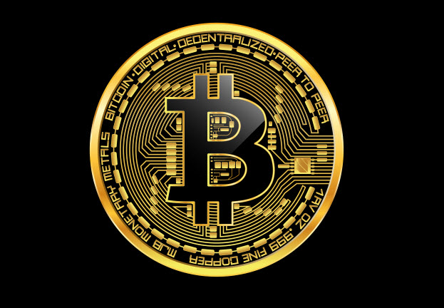

Criptomonedas
Bitcoin
Bitcoin fue creado en 2009 por alguien identificado bajo el seudónimo de Satoshi Nakamoto con tecnología blockchain. Su objetivo fue de ser utilizado como un método de pago que no esté afectado por la supervisión gubernamental, retrasos en las transferencias o tarifas de transacción. Actualmente, Bitcoin se utiliza principalmente como forma de inversión. Se puede decir que sus características se asemejan más a las materias primas que a las monedas tradicionales. Sin embargo, su alta volatilidad le impiden ser una alternativa legal al dinero fiduciario. Es considerada la más importante entre los diferentes tipos de criptomoneda por los expertos. Utiliza un sistema de prueba de trabajo para impedir el doble gasto y alcanzar el consenso entre todos los nodos que integran la red intercambiando información sobre una red no confiable y potencialmente comprometida. Su precio Actual $57,844.91 USD
Jose D Castro L, Maracaibo, Venezuela